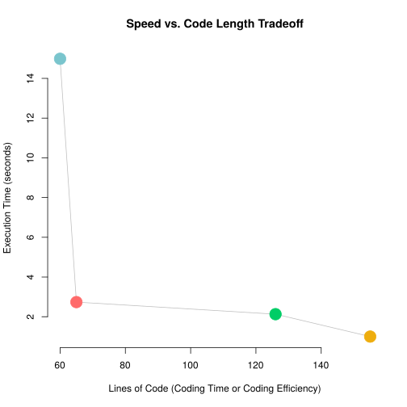

# HERE IS A TEST
x <- rnorm(100)
y <- rnorm(100)
plot(x,y)
Having used R for 3 years in college, I've gotten to know the limits and conveniences of R. As a statistical package, with a large support community it serves its purpose well. However, at times, especially when doing more computation-heavy analysis, R slows down, and reaches memory limits. Hence, I've been looking around for a language that is reasonalbly fast, and quick to develop. Conciseness means less room for coding error (kind of) and usually higher productivity. I checked out C, C++, Go, Scala, and Julia. And since my computational work is usually Bayesian, I created my own criteria for judging performance — a standard Bayesian multiple linear regression algorithm.
\[\begin{array}{rcl} y|\beta & \sim & Normal(X\beta,\sigma^2I) \\ \beta & \sim & Normal(0,100(X'X)^{-1}) \\ \sigma^2 & \sim & Gamma(1,1) \\ \end{array}\]
The simulated data used for this study can be found at my github.
So, I wasn't ever able to successfully implement this algorithm in C or Go. The linear algebra libraries were just a pain to grind through... But I did code up the algorithm in R, Julia, C++, and Scala. Ya, so I'm not a coding master. And there are sites like computer language benchmark games that do a more thourough job. But, it's sometimes nice to try things yourself!
Results
From the plots below, we can see that Julia seems to be fast and concise. So, I guess I'll spend more time with Julia? Totally depends. I definitely found some things that were non-intuitive. Loading libraries takes a while, but there are work-arounds that I want to blog about when I get to it.
I've included the code at the bottom of this page so you can check out what I coded.
 C++ wins in execution time.
C++ wins in execution time.
 R wins marginally in conciseness.
R wins marginally in conciseness.
 We want things to be in the bottom left quadrant — Julia wins that one.